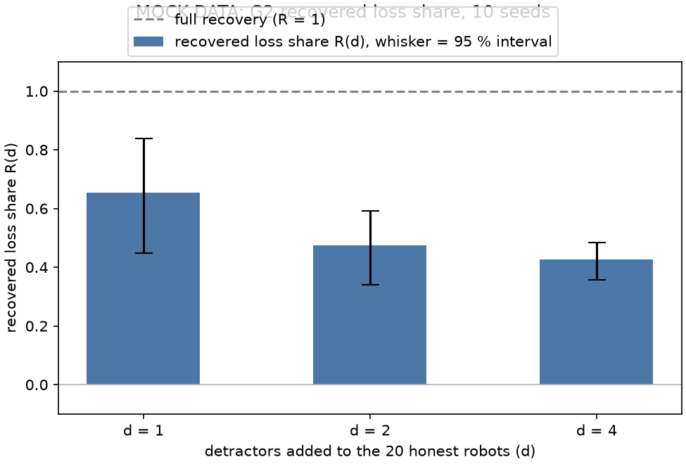

Stage report, step 3 of 3. Back to summary
| What | Compute the recovered loss share R(d) with 95 % intervals and draw the G2 chart. |
|---|---|
| Why | Goal G2 is this chart. On mock data it shows that the flow and the numbers fit together. |
| Input data | 80 manifests from mock/runs/ (80 of 80 cells). Generated (fake) data. |
| Output data | summary.csv (80 rows), g2_stats.csv, g2_recovered_share_MOCK.png, analyze_log.txt. |
| Result (numbers) | defense cost F(0, on) - F(0, off) = -0.60; R(1) = 0.65 [0.45, 0.84]; R(2) = 0.48 [0.34, 0.59]; R(4) = 0.43 [0.36, 0.48]. |
| Result (good or bad) | Good: the loss is resolved at every d > 0, so R(d) has intervals. |
| Status | ran |
Figure and table

| d | seeds | F(d, off) | F(d, on) | loss L(d) [95 %] | gain G(d) [95 %] | share R(d) [95 %] | note |
|---|---|---|---|---|---|---|---|
| 0 | 10 | 59.0 | 58.4 | n/a [n/a, n/a] | -0.60 [-2.20, 1.20] | n/a [n/a, n/a] | defense cost |
| 1 | 10 | 50.6 | 56.1 | 8.40 [6.00, 10.50] | 5.50 [3.10, 7.90] | 0.65 [0.45, 0.84] | |
| 2 | 10 | 40.9 | 49.5 | 18.10 [16.70, 19.50] | 8.60 [5.80, 11.30] | 0.48 [0.34, 0.59] | |
| 4 | 10 | 31.3 | 43.1 | 27.70 [26.30, 29.10] | 11.80 [9.60, 13.80] | 0.43 [0.36, 0.48] |